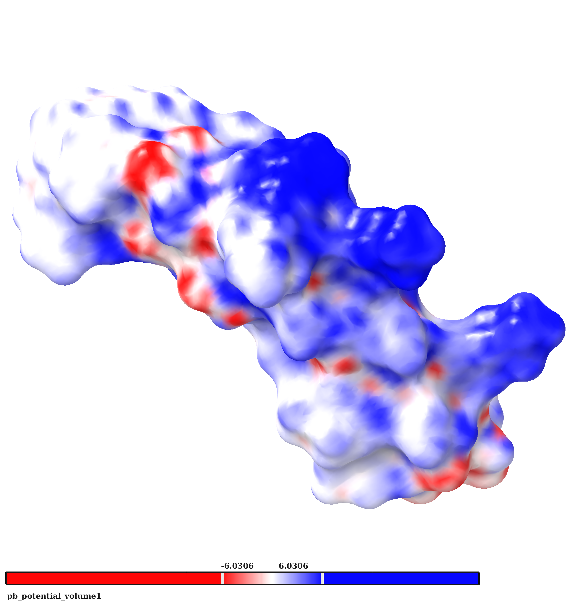
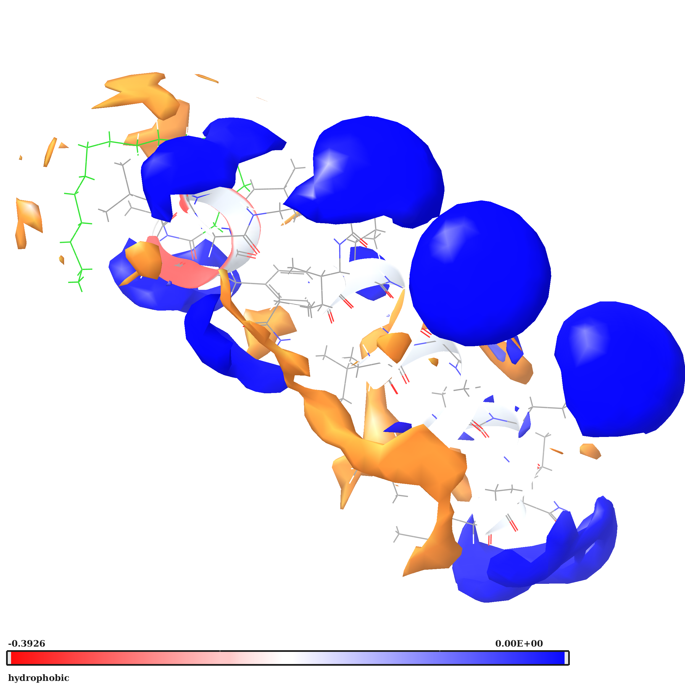
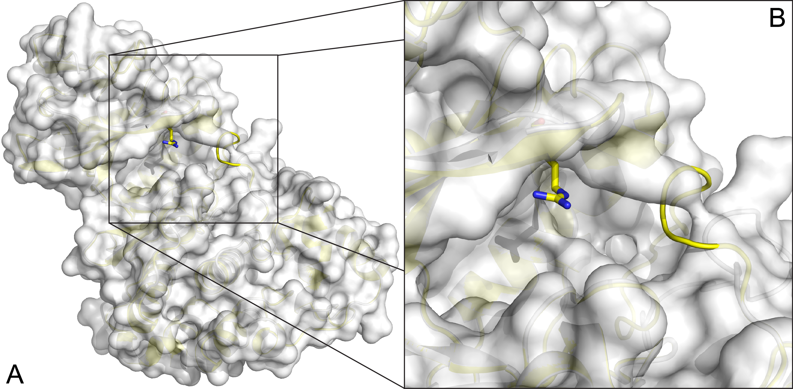

Machine learning in drug design and discovery
![Machine learning (ML) is becoming capable of transforming biomolecular interaction description and calculation, promising an impact on molecular and drug design, chemical biology, toxicology, among others. The first improvements can be seen from biomolecule structure prediction to chemical synthesis, molecular generation, mechanism of action elucidation, inverse design, polypharmacology, organ or issue targeting of compounds, property and multiobjective optimization. Chemical design proposals from an algorithm may be inventive and feasible. Challenges remain, with the availability, diversity, and quality of data being critical for developing useful ML models; marginal improvement seen in some cases, as well as in the interpretability, validation, and reuse of models. The ultimate aim of ML should be to facilitate options for the scientist to propose and undertake ideas and for these to proceed faster. Applications are ripe for transformative results in understudied, neglected, and rare diseases, where new data and therapies are strongly required. Progress and outlook on these themes are provided in this study](WIREs.png)
![Aim: The explosion of data based technology has accelerated pattern mining. However, it is clear that quality and bias of data impacts all machine learning and modeling. Results & methodology: A technique is presented for using the distribution of first significant digits of medicinal chemistry features: logP, logS, and pKa. experimental and predicted, to assess their following of Benford's law as seen in many natural phenomena. Conclusion: Quality of data depends on the dataset sizes, diversity, and magnitudes. Profiling based on drugs may be too small or narrow; using larger sets of experimentally determined or predicted values recovers the distribution seen in other natural phenomena. This technique may be used to improve profiling, machine learning, large dataset assessment and other data based methods for better (automated) data generation and designing compounds. Machine learning and other technology depends critically on quality of data Benford's law can indicate data follows natural phenomena easy, fast, statistical Drug design impacted by FSD of experiment and predicted logP, pKa, solubility distributions Method suited for large datasets Keywords bias chemical library data science distribution drug design drug discovery drug likeness filters machine learning](Benfordslaw.png)
![Data mining approaches can uncover underlying patterns in chemical and pharmacological property space decisive for drug discovery and development. Two of the most common approaches are visualization and machine learning methods. Visualization methods use dimensionality reduction techniques in order to reduce multi-dimension data into 2D or 3D representations with a minimal loss of information. Machine learning attempts to find correlations between specific activities or classifications for a set of compounds and their features by means of recurring mathematical models. Both models take advantage of the different and deep relationships that can exist between features of compounds, and helpfully provide classification of compounds based on such features or in case of visualization methods uncover underlying patterns in the feature space. Drug-likeness has been studied from several viewpoints, but here we provide the first implementation in chemoinformatics of the t-Distributed Stochastic Neighbor Embedding t-SNE method for the visualization and the representation of chemical space, and the use of different machine learning methods separately and together to form a new ensemble learning method called AL Boost. The models obtained from AL Boost synergistically combine decision tree, random forests RF, support vector machine SVM, artificial neural network ANN, k nearest neighbors kNN, and logistic regression models. In this work, we show that together they form a predictive model that not only improves the predictive force but also decreases bias. This resulted in a corrected classification rate of over 0.81, as well as higher sensitivity and specificity rates for the models. In addition, separation and good models were also achieved for disease categories such as antineoplastic compounds and nervous system diseases, among others. Such models can be used to guide decision on the feature landscape of compounds and their likeness to either drugs or other characteristics, such as specific or multiple disease-categoryies or organs of action of a molecule.Keywords machine-learning, drug, data-mining, logistic, organ, drug design, multi-target](yosipofFig2.png)
Peña-Guerrero J., Nguewa P.,* García-Sosa A. T.* "Machine Learning, Artificial Intelligence, and Data Science Breaking into Drug Design and Neglected Diseases" WIREs Computational Molecular Science 2021, e1513, Published online 5th January 2021, [HTML], [DOI], [PDF]
García-Sosa A. T.* "Androgen Receptor Binding Category Prediction with Deep Neural Networks and Structure-, Ligand-, and Statistically-Based Features" Molecules 2021, 26:1285 [DOI], [PDF]
García-Sosa A. T.* "Benford's Law in Medicinal Chemistry: Implications for Drug Design", Future Medicinal Chemistry, 2019, Vol. 11, Iss. 17, 2247-2253, [DOI], [HTML], [PDF], [Data]
Yosipof A., Guedes R. C., García-Sosa A. T.* "Data Mining and Machine Learning Models for Predicting Drug Likeness and their Disease or Organ Category", Frontiers in Chemistry, 2018, Vol. 6, 162, [DOI], [PDF] Highlighted in the Specialty News. Technology Networks "Data Visualization in Biopharma: Leveraging AI, VR, and MR to Support Drug Discovery"
See Publications.
Inhibitors of Leishmania
![Since many of the currently available antileishmanial treatments exhibit toxicity, low effectiveness, and resistance, search and validation of new therapeutic targets allowing the development of innovative drugs have become a worldwide priority. This work presents a structure-based drug discovery strategy to validate the Lmj_04_BRCT domain as a novel therapeutic target in Leishmania spp. The structure of this domain was explored using homology modeling, virtual screening, and molecular dynamics studies. Candidate compounds were validated in vitro using promastigotes of Leishmania major, L. amazonensis, and L. infantum, as well as primary mouse macrophages infected with L. major. The novel inhibitor CPE2 emerged as the most active of a group of compounds against Leishmania, being able to significantly reduce the viability of promastigotes. CPE2 was also active against the intracellular forms of the parasites and significantly reduced parasite burden in murine macrophages without exhibiting toxicity in host cells. Furthermore, L. major promastigotes treated with CPE2 showed significant lower expression levels of several genes (α-tubulin, Cyclin CYCA, and Yip1) related to proliferation and treatment resistance. Our in silico and in vitro studies suggest that the Lmj_04_BRCT domain and its here disclosed inhibitors are new potential therapeutic options against leishmaniasis](ijms-22-10493-g011.png)
![Due to the lack of approved vaccines against human leishmaniasis and the limitations of the current chemotherapy inducing side effects and drug resistance, development of new, effective chemotherapeutic agents is essential. This study describes the synthesis of a series of novel oxadiazoles and indolizine-containing compounds. The compounds were screened in silico using an EIIP/AQVN filter followed by ligand-based virtual screening and molecular docking to parasite arginase. Top hits were further screened versus human arginase and finally against an anti-target battery to tag their possible interactions with proteins essential for the metabolism and clearance of many substances. Eight candidate compounds were selected for further experimental testing. The results show measurable in vitro anti-leishmanial activity for three compounds. One compound with an IC50 value of 2.18 µM on Leishmania donovani intramacrophage amastigotes is clearly better positioned than the others as an interesting molecular template for further development of new anti-leishmanial agents](GraphicalAbstractwBackgrnd.png)
Peña-Guerrero J., Fernández-Rubio C., Burguete-Mikeo A ., El-Dirany R., García-Sosa A. T.*, Nguewa P.* "Discovery and Val idation of Lmj_04_BRCT Domain, a Novel Therapeutic Target: Identification of Can didate Drugs for Leishmaniasis" International Journal of Molecular Sciences 2021, 22:10493 [DOI], [PDF]
Stevanovic S., Sencanski M., Danel M., Menendez C., Belguedj R., Bouraiou A., Nikolic K., Cojean S., Loiseau P. M., Glisic S., Baltas M., García-Sosa, A. T.* "Synthesis, In Silico, and In Vitro Evaluation of Antileishmanial Activity of Oxadiazoles and Indolizine_Containing Compounds Flagged Against Antitargets", Molecules, 2019, Vol. 24, Iss. 7, 1282, [DOI], [HTML], [PDF]
García-Sosa A. T.* "Designing Ligands for Leishmania, Plasmodium, and Aspergillus N-Myristoyl Transferase with Specificity and Antitarget Safe Virtual Libraries", Current Computer-Aided Drug Design, 2018, Vol. 14, No. 2, 131-141, [DOI], [PubMed]
Glisic S., Sencanski M., Perovic V., Stevanovic S., García-Sosa A. T.* "Arginase Flavonoid Antileishmanial In Silico Inhibitors Flagged Against Antitargets" Molecules 2016, 21(5):589 [HTML], [DOI], [PDF]
See Publications.
Cobalt-Ligand complexes inhibit bacterial film and quorum sensing
![Pseudomonas aeruginosa is one of the most dreaded human pathogens, because of its intrinsic resistance to a number of commonly used antibiotics and ability to form sessile communities (biofilms). Innovative treatment strategies are required and that can rely on the attenuation of the pathogenicity and virulence traits. The interruption of the mechanisms of intercellular communication in bacteria (quorum sensing) is one of such promising strategies. A cobalt coordination compound (Co(HL)2) synthesized from (E)-2-(2-(pyridin-2-ylmethylene)hydrazinyl)-4-(p-tolyl)thiazole (HL) is reported herein for the first time to inhibit P. aeruginosa 3-oxo-C12-HSL-dependent QS system (LasI/LasR system) and underling phenotypes (biofilm formation and virulence factors). Its interactions with a possible target, the transcriptional activator protein complex LasR-3-oxo-C12-HSL, was studied by molecular modeling with the coordination compound ligand having stronger predicted interactions than those of co-crystallized ligand 3-oxo-C12-HSL, as well as known-binder furvina. Transition metal group 9 coordination compounds may be explored in antipathogenic/antibacterial drug design.
Keywords: antibacterial resistance; antivirulence/antipathogenic compounds; biofilm prevention; cobalt complex; furvina; pyocyanin; pyoverdine; quorum sensing inhibition; transcriptional activator protein LasR](molecules-23-01385-sch001.png)
Borges A., Simões M., Todorovic T. R., Filipovic, N. R., García-Sosa A. T.* "Cobalt Complex with Thiazole_Based Ligand as New Pseudomonas aeruginosa Quorum Quencher, Biofilm Inhibitor, and Virulence Attenuator", Molecules, 2018, Vol. 23, 1385, [DOI], [HTML], [PDF]
See Publications.
Delivering DNA in vivo with cell penetrating peptides
Selected for Cover Figure and Editorial Comment![As the field of gene therapy progresses, an increasingly urgent need has arisen for efficient and non-toxic vectors for the in vivo delivery of nucleic acids. Cell-penetrating peptides (CPP) are very efficient transfection reagents in vitro, however, their application in vivo needs improvement.
To enhance in vivo transfection we designed various CPPs based on previous knowledge of internalization studies and physiochemical properties of NickFect (NF) nanoparticles. We show that increment of the helicity of these Transportan10 analogues improves the transfection efficiency. We rationally design by modifying the net charge and the helicity of the CPP a novel amphipathic α-helical peptide NF55 for in vivo application. NF55 condenses DNA into stable nanoparticles that are resistant to protease degradation, promotes endosomal escape, and transfects the majority of cells in a large cell population.
We demonstrate that NF55 mediates DNA delivery in vivo with gene induction efficiency that is comparable to commercial transfection reagents. In addition to gene induction in healthy mice, NF55/DNA nanoparticles showed promising tumor transfection in various mouse tumor models, including an intracranial glioblastoma model. The efficiency of NF55 to convey DNA specifically into tumor tissue increased even further after coupling a PEG2000 to the peptide via a disulphide-bond. Furthermore, a solid formulation of NF55/DNA displayed an excellent stability profile without additives or special storage conditions.
Together, its high transfection efficacy and stability profile make NF55 an excellent vector for the delivery of DNA in vivo.](jcr_cover_figure.jpg)
 
Freimann K., Arukuusk P., Kurrikoff K., Ferreira Vasconcelos L. D., Veiman K. -L., Uusna J., Margus H., García-Sosa A. T., Pooga M., Langel Ü, "Optimization of in vivo DNA delivery with NickFect peptide vectors", Journal of Controlled Release, 2016, Vol. 241, 134-143. [HTML], [DOI]
See Publications.
Cell-penetrating peptides binding to siRNA
The binding affinity of a series of cell-penetrating peptides (CPP) was modeled through docking and making use of the number of intermolecular hydrogen bonds, lipophilic contacts, and the number of sp3 molecular orbital hybridization carbons. The new ranking of the peptides is consistent with the experimentally determined efficiency in the downregulation of luciferase activity, which includes the peptides' ability to bind and deliver the siRNA into the cell. The predicted structures of the complexes of peptides to siRNA were stable throughout 10 ns long, explicit water molecular dynamics simulations. The stability and binding affinity of peptide-siRNA complexes was related to the sidechains and modifications of the CPPs, with the stearyl and quinoline groups improving affinity and stability. The reranking of the peptides docked to siRNA, together with explicit water molecular dynamics simulations, appears to be well suited to describe and predict the interaction of CPPs with siRNA.![The binding affinity of a series of cell-penetrating peptides (CPP) was modeled through docking and making use of the number of intermolecular hydrogen bonds, lipophilic contacts, and the number of sp3 molecular orbital hybridization carbons. The new ranking of the peptides is consistent with the experimentally determined efficiency in the downregulation of luciferase activity, which includes the peptides' ability to bind and deliver the siRNA into the cell.
The predicted structures of the complexes of peptides to siRNA were stable throughout 10 ns long, explicit water molecular dynamics simulations. The stability and binding affinity of peptide-siRNA complexes was related to the sidechains and modifications of the CPPs, with the stearyl and quinoline groups improving affinity and stability. The reranking of the peptides docked to siRNA, together with explicit water molecular dynamics simulations, appears to be well suited to describe and predict the interaction of CPPs with siRNA.](Fig1_cpps.png)
García-Sosa A. T.,* Tulp I., Langel K., Langel Ü., "Peptide-Ligand Binding Modeling of siRNA with Cell-Penetrating Peptides", BioMed Research International, 2014, Vol. 2014, Article ID 257040, 7 pages. DOI: http://dx.doi.org/10.1155/2014/257040, [PDF].
See Publications.
Mutations in MPK12 produce different activity in plant signalling
![Plant gas exchange is regulated by guard cells that form stomatal pores. Stomatal adjustments are crucial for plant survival; they regulate uptake of CO2 for photosynthesis, loss of water, and entrance of air pollutants such as ozone. We mapped ozone hypersensitivity, more open stomata, and stomatal CO2-insensitivity phenotypes of the Arabidopsis thaliana accession Cvi-0 to a single amino acid substitution in MITOGEN-ACTIVATED PROTEIN (MAP) KINASE 12 (MPK12). In parallel, we showed that stomatal CO2-insensitivity phenotypes of a mutant cis (CO2-insensitive) were caused by a deletion of MPK12. Lack of MPK12 impaired bicarbonate-induced activation of S-type anion channels. We demonstrated that MPK12 interacted with the protein kinase HIGH LEAF TEMPERATURE 1 (HT1)—a central node in guard cell CO2 signaling—and that MPK12 functions as an inhibitor of HT1. These data provide a new function for plant MPKs as protein kinase inhibitors and suggest a mechanism through which guard cell CO2 signaling controls plant water management.](Fig1_MPK12_MPK12-G53R-600dpi.png)

See Publications.
Small, low-toxicity, novel compounds that inhibit HIV-1
![A set of top-ranked compounds from a multi-objective in silico screen was experimentally tested for toxicity and the ability to inhibit the activity of HIV-1 reverse transcriptase (RT) in cell-free assay and in cell-based assay using HIV-1 based virus-like particles. Detailed analysis of a commercial sample that indicated specific inhibition of HIV-1 reverse transcription revealed that a minor component that was structurally similar to that of the main compound was responsible for the strongest inhibition. As a result, novel s-triazine derivatives were proposed, modelled, discovered, and synthesised, and their antiviral activity and cellular toxicity were tested. Compounds 18a and 18b were found to be efficient HIV-1 RT inhibitors, with an IC50 of 5.6 ± 1.1 μM and 0.16 ± 0.05 μM in a cell-based assay using infectious HIV-1, respectively. Compound 18b also had no detectable toxicity for different human cell lines. Their binding mode and interactions with the RT suggest that there was strong and adaptable binding in a tight (NNRTI) hydrophobic pocket. In summary, this iterative study produced structural clues and led to a group of non-toxic, novel compounds to inhibit HIV-RT with up to nanomolar potency](HIVrt_exp.jpg)
See Publications.
Virtual Screening for HIV-1 Protease
![A virtual screening to find novel inhibitors for HIV protease was performed on the ZINC database.1 A critical part in virtual screening and associated techniques is preliminary database filtering and size reduction and for that purpose a novel feature matrix matching procedure was used. The reduction of ∼14 million available ligands to a subset of 14299 ligands was achieved with a structure based approach where the analysis of the 3D structure of the active site of the protease produced a graph with hydrogen bond donor, hydrogen bond acceptor and hydrophobic subsites represented as graph nodes. A similar treatment was also applied to the compound database content and the comparison of binding site and ligand graphs was used to preselect potentially active ligands. The resulting set was further subjected to docking. The algorithm used was able to find several novel as well as previously known and experimentally tested ligands, demonstrating the validity of the approach.](z36140438_n_dockedcogn_n_1bwb.png)
See Publications.
Triangular numbers in re-ranking for HIV-1 Integrase
Ranking in virtual screening for HIV-1 integrase was improved using triangular numbers, which can group different runs from mutants, conformations and conditions. They are a growing series of numbers that in this work allow to define an objective threshold above which the majority of the top compounds are known inhibitors, while providing leeway for new compounds. Antitargets allow to profile the ligands according to five metabolizing and drug-effluxing enzymes and proteins.![A delicate balance exists between a drug molecule's toxicity and its activity. Indeed, efficacy, toxicity, and side effect problems are a common cause for the termination of drug candidate compounds and development projects.
To address this, an antitarget interaction profile is built and combined with virtual screening and cross docking for new inhibitors of HIV-1 integrase, in order to consider possible off-target interactions as early as possible in a drug or hit discovery program. New ranking techniques using triangular numbers improve ranking information on the compounds and recovery of known inhibitors into the top compounds using different docking programs. This improved ranking arises from using consensus of ranks between docking programs and ligand efficiencies to derive a new rank, instead of using absolute score values, or average of ranks. The triangular number rerank also allowed the objective combination of results from several protein targets or screen conditions and several programs.
Triangular number reranking conserves more information than other reranking methods such as average of scores or averages of ranks. In addition, the use of triangular numbers for reranking makes possible the use of thresholds with a justified leeway based on the number of available known inhibitors, so that the majority of the compounds above the threshold in ranks compare to the compounds that have known experimentally determined biological activity.
The battery of anti- or off-targets can be tailored to specific molecular or drug design challenges. In silico filters can thus be deployed in successive stages, for prefiltering, activity profiling, and for further analysis and triaging of libraries of compounds.](Fig_triangular.gif)
García-Sosa A. T.,* Maran, U., "Improving the Use of Ranking in Virtual Screening against HIV-1 Integrase with Triangular Numbers and Including Ligand Profiling with Antitargets", Journal of Chemical Information and Modeling, 2014, Vol. 54, Iss. 11, 3172-3185. DOI: http://dx.doi.org/10.1021/ci500300u, [PDF].
Anti-targets, ligand efficiency, and docking for HIV-1 RT, including some possible metabolic effects
We used ligand binding efficiencies in virtual screening, together with anti-targets composing several proteins involved in compound metabolism, in order to discover candidate compounds for wild-type and drug-resistant HIV-1 reverse transcriptases that have the best profiles, both for binding to a variety of targets (target proteins in several conformational, mutational, and hydration states), as well as their predicted interaction profile with PXR, SULT, and several CYPs.Predicted positive and negative interaction profiles, both for pharmaceutical target inhibition and for the metabolic in silico profile of candidate compounds are thus developed. This may help in polypharmacology, systems pharmacology, drug repurposing, and other settings involving optimization to a variety of partners and chemical properties.
![A.T. Garcia-Sosa, S. Sild, K. Takkis, U. Maran, Combined Approach using Ligand Efficiency, Cross-Docking, and Anti-Target Hits for Wild-Type and Drug-Resistant Y181C HIV-1 Reverse Transcriptase, Journal of Chemical Information and Modeling, J. Chem. Inf. Model. 2011, Vol. 51, Iss. 10, 2595-2611 metabolism side-effect toxicity liver intestines anti-targets score in silico docking binding mode x-ray crstal structure sulfotransferase SULT pregnane-x-receptro PXR cytochrome P450 2a6 2c9 3a4 CYP cross-docking cognate ligand inhibitor Abstract: New hits against HIV-1 wild-type and Y181C drug-resistant reverse transcriptases were predicted taking into account the possibility of some of the known metabolism interactions.
In silico hits against a set of antitargets (<em>i.e.</em>, proteins or nucleic acids that are off-targets from the desired pharmaceutical target objective) are used to predict a simple, visual measure of possible interactions for the ligands, which helps to introduce early safety considerations into the design of compounds before lead optimization.
This combined approach consists of consensus docking and scoring: cross-docking to a group of wild-type and drug-resistant mutant proteins, ligand efficiency (also called binding efficiency) indices as new ranking measures, pre- and postdocking filters, a set of antitargets and estimation, and minimization of atomic clashes.
Diverse, small-molecule compounds with new chemistry (such as a triazine core with aromatic side chains) as well as known drugs for different applications (oxazepam, chlorthalidone) were highly ranked to the targets having binding interactions and functional group spatial arrangements similar to those of known inhibitors, while being moderate to low binders to the antitargets.
The results are discussed on the basis of their relevance to medicinal and computational chemistry.
Optimization of ligands to targets and off-targets or antitargets is foreseen to be critical for compounds directed at several simultaneous sites.](HIVrt-F5-rev.png)
García-Sosa A. T.,* Sild S., Takkis K., Maran U., "Combined Approach using Ligand Efficiency, Cross-Docking, and Anti-Target Hits for Wild-Type and Drug-Resistant Y181C HIV-1 Reverse Transcriptase", Journal of Chemical Information and Modeling, 2011, Vol. 51, Iss. 10, 2595-2611.
link: HTML, DOI, [PDF].
See Publications.
Hydration of ligands in 2,332 crystal structures and their associated binding energies
Recent findings are changing the view of water molecules in binding events, from a passive role to a fundamental and driving one. They can bridge protein-ligand interactions and guide their specificity, energetics, both enthalpically and entropically, and these outcomes depend on the shape, size, chemical, and dynamical nature of protein binding site and ligands. High resolution X-ray crystal structures with reported experimentally determined Ki or Kd show that there is no statistically significant difference in binding energy between binding sites with tightly-bound water molecules and those without them. Other physicochemical properties and ligand efficiencies are also compared. There are also benefits of lower logP and better developability for tightly hydrated compounds, while stronger potency is not always required or beneficial. These results also hold for drugs/non-drugs comparisons.In addition, agonists and antagonists that use tightly bound water bridges are smaller, less lipophilic, and less planar; have deeper ligand efficiency indices; and in general, possess better physicochemical properties for further development. Therefore, tightly bound, bridging water molecules may in some cases be replaced and targeted as a strategy, though sometimes keeping them as bridges may be better from a pharmacodynamic perspective. The hydrated binding site may be one of the many structure conformations available to the receptor, and different ligands will have a different ability to select either tightly hydrated or non-tightly hydrated or non-hydrated receptor binding site conformations.
Compounds may thus be designed, and if a tightly bound, bridging water molecule is observed in the binding site, attempts to replace it should only be made if the subsequent ligand modification would improve also its ligand efficiency, enthalpy, specificity, and pharmacokinetic properties. If the modification does succeed in replacing the tightly bound, bridging water molecule, it will have at least achieved benefits for ligand optimization and development independently of either positive or negative change in binding affinity outcome.
![Some water molecules in binding sites are important for
intermolecular interactions and stability. The way binding site explicit
water molecules are dealt with affects the diversity and nature of
designed ligand chemical structures and properties. The strategies
commonly employed frequently assume that a gain in binding affinity
will be achieved by their targeting or neglect. However, in the present
work, 2332 high-resolution X-ray crystal structures of hydrated and
nonhydrated, drug and nondrug compounds in biomolecular
complexes with reported Ki or Kd show that compounds that use
tightly bound, bridging water molecules are as potent as those that do
not. The distribution of their energies, physicochemical properties, and
ligand efficiency indices were compared for statistical significance, and
the results were confirmed using 2000 permutation runs. Ligand cases
were also split into agonists and antagonists, and crystal structure pairs with differing tightly bound water molecules were also
compared. In addition, agonists and antagonists that use tightly bound water bridges are smaller, less lipophilic, and less planar;
have deeper ligand efficiency indices; and in general, possess better physicochemical properties for further development.
Therefore, tightly bound, bridging water molecules may in some cases be replaced and targeted as a strategy, though sometimes
keeping them as bridges may be better from a pharmacodynamic perspective. The results suggest general indications on tightly
hydrated and nontightly hydrated compounds in binding sites and practical considerations to adopt a strategy in drug and
molecular design when faced with this special type of water molecules. There are also benefits of lower log P and better
developability for tightly hydrated compounds, while stronger potency is not always required or beneficial. The hydrated binding
site may be one of the many structure conformations available to the receptor, and different ligands will have a different ability to
select either hydrated or nonhydrated receptor binding site conformations. Compounds may thus be designed, and if a tightly
bound, bridging water molecule is observed in the binding site, attempts to replace it should only be made if the subsequent
ligand modification would improve also its ligand efficiency, enthalpy, specificity, and pharmacokinetic properties. If the
modification does succeed in replacing the tightly bound, bridging water molecule, it will have at least achieved benefits for ligand
optimization and development independently of either positive or negative change in binding affinity outcome](TOC_watjcim2013.png)
García-Sosa A. T.,* "Hydration Properties of Ligands and Drugs in Protein Binding Sites: Tightly-Bound, Bridging Water Molecules and Their Effects and Consequences on Molecular Design Strategies" , Journal of Chemical Information and Modeling, 2013, Vol. 53, Iss. 6, 1388-1405. DOI: http://dx.doi.org/10.1021/ci3005786, [Abstract], [PDF].
See Publications.
DrugLogit: Multivariate Logistic Regression, Drugs, Non-drugs, and Disease-Specificity
Simple and chemically intuitive logistic functions have been built to distinguish between drugs and non-drugs, taking into account individual disease categories or organ groups. These relate a few readily-available physicochemical molecular properties to a continuous and gradual outcome being the probability of classification as a drug, or drug-likeness.![Alfonso T. Garcia-Sosa, Mare Oja, Csaba Hetenyi, U. Maran, DrugLogit: Logistic Discrimination between Drugs and Nondrugs Including Disease-Specificity by Assigning Probabilities Based on Molecular Properties Journal of Chemical Information and Modeling, J. Chem. Inf. Model. 2012, Vol. 52, 2165-2180, ABSTRACT: The increasing knowledge of both structure and activity of compounds provides a good basis for enhancing the pharmacological characterization of chemical libraries. In addition, pharmacology can be seen as incorporating both advances from molecular biology as well as chemical sciences, with innovative insight provided from studying target-ligand data from a ligand molecular point of view. Predictions and profiling of libraries of drug candidates have previously focused mainly on certain cases of oral bioavailability. Inclusion of other administration routes and disease-specificity would improve the precision of drug profiling. In this work, recent data are extended, and a probability-based approach is introduced for quantitative and gradual classification of compounds into categories of drugs/nondrugs, as well as for disease- or organ-specificity. Using experimental data of over 1067 compounds and multivariate logistic regressions, the classification shows good performance in training and independent test cases. The regressions have high statistical significance in terms of the robustness of coefficients and 95% confidence intervals provided by a 1000-fold bootstrapping resampling. Besides their good predictive power, the classification functions remain chemically interpretable, containing only one to five variables in total, and the physicochemical terms involved can be easily calculated. The present approach is useful for an improved description and filtering of compound libraries. It can also be applied sequentially or in combinations of filters, as well as adapted to particular use cases. The scores and equations may be able to suggest possible routes for compound or library modification. The data is made available for reuse by others, and the equations are freely accessible at http://hermes.chem.ut.ee/~alfx/druglogit.html separation distinction](TOCdruglogit.png)
See Calculators Using These Equations.
García-Sosa A. T.,* Oja M., Hetényi C., Maran U., "DrugLogit: Logistic Discrimination between Drugs and Nondrugs Including Disease-Specificity by Assigning Probabilities Based on Molecular Properties", Journal of Chemical Information and Modeling, 2012, Vol. 52, Iss. 8, 2165-2180. DOI: http://dx.doi.org/10.1021/ci200587h, [Abstract], [PDF].
See Publications.
Description and characterization of drugs and non-drugs in chemical space through principal components analysis, and through probability density functions
![A.T. Garcia-Sosa, C. Hetenyi, U. Maran, Molecular property filters describing pharmacokinetics and drug binding, Current Medicinal Chemistry, Curr. Med. Chem. journal 2012, Vol. 19, Iss. 11, 1646 - 1662 drug design drug likeness non-drugs Abstract: Drug-target binding affinity and pharmacokinetics are equally important factors of drug design.
Simple molecular properties such as molecular size have been used as pharmacokinetic and/or drug-likeness filters during chemical library design and also correlated with binding affinity.
In the present study, current property filters are reviewed, a collection of their optimal values is provided, and a statistical framework is introduced allowing calibration of their selectivity and sensitivity for drugs.
The role of ligand efficiency indices in drug design is also described.
It is concluded that the usefulness of property filters of molecular size and lipophilicity is limited as predictors of general drug-likeness.
However, they demonstrate increased performance in specific cases, <em>e.g.</em> in central nervous system diseases, emphasizing their future importance in specific, disease-focused library design instead of general drug-likeness filtering.
The physicochemical descriptor space has been extensively mapped and described in the literature for orally administered drugs and lead compounds. However, consideration of negative examples (non-drugs) or disease pathophysiology is not common in many studies. In the present work, a principal component analysis was carried out using drugs and non-drugs taking into account disease- and organ-specific categories, as well as different administration routes in addition to oral. The study involves 1386 relevant small-molecules including natural and synthetic products. Drug-specific as well as disease-category-specific or organ-specific regions and their respective threshold sets (ranges of descriptors) relative to non-drugs were elucidated on the scores plot and validated with external, independent sets of drugs and non-drugs. The respective loadings plot of molecular descriptors was rationalized in terms of physicochemically relevant groups related to the components of solvation free energy. The results of this analysis can contribute to the improved profiling of drug candidates and libraries making use of disease- and organ-specificity coded by physicochemical descriptors and ligand binding efficiency.](F4abc-v4c-2column2-CMC-BW.png)
[PubMed 22376034], [DOI], [HTML], [PDF].
García-Sosa A. T.,* Oja M., Hetényi C., Maran U., "Disease-specific differentiation between drugs and non-drugs using principal component analysis of their molecular descriptor space", Molecular Informatics, 2012, Vol. 31, 369-383.
[DOI], [HTML], [PDF].
García-Sosa A. T.,* and Maran U., "Drugs, non-drugs, and disease category specificity: Organ effects by ligand pharmacology", SQER, 2013, Vol. 24, 585-597.
[DOI], [HTML], [PDF].
See Publications.
2011: Named 'Hot Article in Biochemistry' by Wiley
Chemically Relevant Functional Group Substitutions of a Tightly-Bound Water Molecule Including Enthalpic, Entropic, Fully Explicit Solvent and Ground State Effects
New, modified ligands for the Abl tyrosine kinase-SH3 domain implicated in chronic myelogenous leukemia (CML, a cancer of white blood cells) were built by generating different scenarios: including, neglecting, and targeting a specific hydration site with several chemical functional groups. This enabled determining the thermodynamic and structural effects of these chemical probes in a protein-ligand complex that has a tightly-bound water molecule bridging the interaction. Molecular dynamics using thermodynamic integration (a relative of the free energy perturbation method), explicit water, periodic boundary conditions, full thermodynamic cycles to include the desolvation effects of ligands as well as of the individual water molecule, and correcting for the ground state provides valuable information on the different groups that are best suited chemically and physically for substitution. Some water molecules are loosely bound to the protein or ligand surface, and so will not interfere or interact strongly. However, there are some which will be strongly bound and can be distinguished in several complexed states of the protein (see WaterScore below). This paper shows the different routes available for modification of the ligand structure based on a strongly-bound water, and their effects and insight into ligand optimization of protein–ligand–water systems.The energy of extracting a water molecule from the bulk solvent of water molecules has the reverse sign, but the same magnitude, as the energy of replacing a water molecule into the bulk solvent.
![A.T. Garcia-Sosa, R.L. Mancera, Free Energy Calculations of Mutations Involving a Tightly Bound Water Molecule and Ligand Substitutions in a Ligand-Protein Complex, Molecular Informatics, Mol Inf, 2010, Vol. 29, Iss. 8-9, 589-600 cancer tumor inhibitor water molecule free energy solvation hydration drug design docking molecular dynamics Abstract: The accurate calculation of the free energy of interaction of protein–water–ligand systems has an important role in molecular recognition and drug design that is often not fully considered.
We report free energy thermodynamic integration calculations used to evaluate the effects of inclusion, neglect, and targeting and removal (<em>i.e.</em>, systematic substitution by ligand functional groups) of an important, tightly bound, water molecule in the SH3 domain of Abl tyrosine kinase.
The effects of this water molecule on the free energies of interaction of several Abl-SH3 domain-ligand systems reveal that there is an unfavourable free energy change associated with its removal into the bulk solvent.
Only three substitutions by an additional functional group (out of methyl, ethyl, hydroxyl, amino, and amide groups) in the phenyl ring of a tyrosine in the peptide ligand resulted in a favourable change in the free energy of binding upon replacement of the ordered water molecule.
This computational approach provides a direct route to the systematic and rigorous prediction of the thermodynamic influence of ordered, structural water molecules on ligand modification and optimization in drug design by calculating free energy changes in protein–water–ligand systems.](hydwat.png)
García-Sosa A. T.* and Mancera R.L., "Free Energy Calculations of Mutations Involving a Tightly Bound Water Molecule and Ligand Substitutions in a Ligand-Protein Complex", Molecular Informatics, 2010, Vol. 29, Iss. 8-9, 589-600.
link: HTML, DOI, [PDF].
(typo: p 594, l 14 should read "atomic fluctuation = 0.89 Å, effective k = 2 kcal / mol / Å ")
See Publications.
Ligand and drug efficiency indices (EI)
Efficiency indices effectively normalize the free energy of binding of a drug or ligand per a given measure of that compound's molecular characteristics, such as molecular weight or number of heavy atoms. Particular ligand efficiencies were determined to improve the correlation between experimental and calculated EI values for protein-drug complexes. ΔG/W (free energy of binding divided by Wiener index, a topological measure), ΔG/NoC (free energy of binding divided by number of carbons, a measure of size and lipophilicity), and ΔG/P (free energy of binding divided by the octanol / water partition coefficent, a measure of lipophilicity and hydrophilicity) produced improved correlations for EI for several docking programs and scoring functions. Better correlations between experimental and calculated EI values can improve the accuracy of virtual screening and molecular docking. In addition, the common bias of scoring functions in favor of larger ligands can be removed.![A.T. Garcia-Sosa, C. Hetenyi, U. Maran, Drug Efficiency Indices for Improvement of Molecular Docking Scoring Functions, Journal of Computational Chemistry, J. Comput. Chem. 2010, Vol. 31, Number 1, 174-184 ligand efficiencies, binding efficiencies, drug Abstract:
A dataset of protein-drug complexes with experimental binding energy and crystal structure were analyzed and the performance of different docking engines and scoring functions (as well as components of these) for predicting the free energy of binding and several ligand efficiency indices were compared.
The aim was not to evaluate the best docking method, but to determine the effect of different efficiency indices on the experimental and predicted free energy.
Some ligand efficiency indices, such as ΔG/W (Wiener index), ΔG/NoC (number of carbons), and ΔG/P (partition coefficient), improve the correlation between experimental and calculated values.
This effect was shown to be valid across the different scoring functions and docking programs.
It also removes the common bias of scoring functions in favor of larger ligands. Compound collection filtering can be done prior or after docking, using pharmacokinetic as well as pharmacodynamic profiles.
Achieving these better correlations with experiment can improve the ability of docking scoring functions to predict active molecules in virtual screening.](Figjcc_ei.jpg)
García-Sosa A. T.,* Hetényi C., Maran U., "Drug Efficiency Indices for Improvement of Molecular Docking Scoring Functions", Journal of Computational Chemistry, 2010, Vol. 31, Number 1, 174-184.
link: DOI , HTML, [PDF], [authorPDF].
García-Sosa A. T.,* Sild S., Maran U.,"Docking and Virtual Screening Using Distributed Grid Technology", QSAR & Combinatorial Science, 2009, Vol. 28, Number 8, 815-821.
link: DOI , HTML, [authorPDF].
See Publications.
Inhibitor design targeting H5N1 avian influenza
Drug design was conducted together with virtual screening for generating inhibitors that simultaneously occupy several binding sites of both wild-type H5N1 avian influenza neuraminidase, as well as of a drug-resistant mutant. Several ligand efficiency (also called binding efficiency) values were used to better characterize the compounds.![A.T. Garcia-Sosa, S. Sild, U. Maran, Design of Multi-Binding-Site Inhibitors, Ligand Efficiency, and Consensus Screening of Avian Influenza H5N1 Wild-Type Neuraminidase and of the Oseltamivir-Resistant H274Y Variant, Journal of Chemical Information and Modeling, J. Chem. Inf. Model. 2008, Vol. 48, 2074-2080 H5N1 influenza neuraminidase docking virtual screening The binding sites of wild-type avian influenza A H5N1 neuraminidase, as well as those of the Tamiflu (oseltamivir)-resistant H274Y variant, were explored computationally to design inhibitors that target simultaneously several adjacent binding sites of the open conformation of the virus protein.
The compounds with the best computed free energies of binding, in agreement by two docking methods, consensus scoring, and ligand efficiency values, suggest that mimicking a polysaccharide, β-lactam, and other structures, including known drugs, could be routes for multibinding site inhibitor design.
This new virtual screening method based on consensus scoring and ligand efficiency indices is introduced, which allows the combination of pharmacodynamic and pharmacokinetic properties into unique measures.](FigH5N1jcim.png)
See Animation.
García-Sosa A. T.,* Sild S., Maran U., "Design of Multi-Binding-Site Inhibitors, Ligand Efficiency, and Consensus Screening of Avian Influenza H5N1 Wild-Type Neuraminidase and of the Oseltamivir-Resistant H274Y Variant", Journal of Chemical Information and Modeling, 2008, Vol. 48, 2074-2080.
link: DOI , Supporting Information , [PDF].
See Publications.
Drug design with metalloproteins, zinc centres and multiple molecular dynamics simulations
Small molecule inhibitors of Botulinum neurotoxin serotype A (BoNTA) were designed using multiple molecular dynamics simulations (MMDS) and a non-bonded four coordination active site zinc model, as well as projects on protein-ligand free energy of binding and other thermodynamic analyses of multiple protein-ligand systems.The use of 20 molecular dynamics simulations of at least 2 ns in explicit solvent results in improved sampling that provides a good measure to discriminate if a ligand in a given binding mode has favourable interactions inside a binding site, with the best ligands remaining in a strong coordination to the protein and having favourable interaction energy terms.
![J.G. Park, P.C. Sill, E.F. Makiyi, A.T. Garcia-Sosa, C.B. Millard, J.J. Schmidt, Y.P. Pang, Serotype-selective, Small-molecule Inhibitors of the Zinc Endopeptidase of Botulinum Neurotoxin Serotype A, Bioorganic & Medicinal Chemistry, Bioorg. Med. Chem., 2006, Vol. 14, 395-408 Tetrahedral zinc protein ligand inhibitor drug design molecular dynamics Botulinum neurotoxin serotype A (BoNTA) is one of the most toxic substances known.
Currently, there is no antidote to BoNTA.
Small molecules identified from high-throughput screening reportedly inhibit the endopeptidase – the zinc-bound, catalytic domain of BoNTA – at a drug concentration of 20 µM.
However, optimization of these inhibitors is hampered by challenges including the computational evaluation of the ability of a zinc ligand to compete for coordination with nearby residues in the active site of BoNTA.
No improved inhibitor of the endopeptidase has been reported.
This article reports the development of a serotype-selective, small-molecule inhibitor of BoNTA with a K<sub><em>i</em></sub> of 12 µM.
This inhibitor was designed to coordinate the zinc ion embedded in the active site of the enzyme for affinity and to interact with a species-specific residue in the active site for selectivity.
It is the most potent small-molecule inhibitor of BoNTA reported to date.
The results suggest that multiple molecular dynamics simulations using the cationic dummy atom approach are useful to structure-based design of zinc protease inhibitors.](figforwebpcs4.png)
This page has a movie that shows part of an MD simulation of the 12 micromolar inhibitor of BoNTA. The zinc atom center is shown as a sphere in magenta:
See Movie.
Park J.G., Sill P.C., Makiyi E.F., Garcia-Sosa A. T., Millard C.B., Schmidt J.J., Pang Y.P., "Serotype-selective, Small-molecule Inhibitors of the Zinc Endopeptidase of Botulinum Neurotoxin Serotype A", Bioorganic & Medicinal Chemistry, 2006, Vol. 14, 395-408.
link: DOI , [PDF].
See Publications.
Explicit, crystallographic water molecules in computer-aided drug design
Hydration of protein-substrate/inhibitor complexes is a factor involved in the design of ligands. Water molecules have a very important role in the molecular recognition process as well as in the overall thermodynamics of protein-ligand binding and biomolecular processes. Therefore, dynamic simulation studies of proteins in an aqueous environment are critical for a realistic description of their structure and thermodynamic properties. A study of both the structural and dynamical properties of these systems proves useful to understand ligand–binding phenomena.A first step in these studies was a comprehensive survey of patterns in hydration sites as seen in the crystal structures of sets of proteins of interest. A multivariate function was developed to fit the properties of the water molecules observed both in the X ray crystal structures of the active sites of apo proteins and in the structure of the actives sites of complexes of the same proteins, to distinguish them from the properties of those water molecules not matched between sites. These comparisons were carried out for a variety of proteins. The predicted outcome variable (called WaterScore value) may be used to assign the probability of observing a particular water molecule from the apo protein structure in a structure of a complex of that protein, provided that it is not displaced sterically by the ligand or by a protein conformational change. The group of water molecules used in the analysis are those in the hydration shell of the ligand in the complex structure of the protein. This is interesting for drug design, docking strategies and methods because it allows the inclusion of a set of explicit water molecules, since the bound water molecules can be scored very easily and fast. The inclusion of specific water molecules allows for a better description of protein-ligand binding and improves the calculation of binding poses, intermolecular interactions and binding energy.
![A.T. Garcia-Sosa, R.L. Mancera, P.M. Dean, WaterScore: A Novel Method for Distinguishing between Bound and Displaceable Water Molecules in the Crystal Structure of the Binding Site of Protein-Ligand Complexes, Journal of Molecular Modeling, J. Mol. Model., 2003, Vol. 9, Issue 3, 172-182 hydration sites water molecules X-ray crystal structure protein ligand drug Abstract: We have performed a multivariate logistic regression analysis to establish a statistical correlation between the structural properties of water molecules in
the binding site of a free protein crystal structure, with the probability of observing the water molecules in the same location in the crystal structure of the ligand–complexed form.
The temperature B-factor, the solvent-contact surface area, the total hydrogen bond energy, and the number of protein-water contacts were found to discriminate between bound and displaceable water molecules in the best regression functions obtained.
These functions may be used to identify those bound water molecules that should be included in structure-based drug design and ligand docking algorithms.](Figure1-1.jpg)
You can use the WaterScore Calculator© below to type in the values of the properties of water molecules and compute their WaterScore value. SCSA is the solvent accessible contact surface area (in Å2), and NPAC is the number of protein atomic contacts the water molecule has within a distance of 3.5 Å.
WaterScore Calculator ©
Note: A value of NaN indicates a very small value, close to zero. You need to have JavaScript enabled on your web browser. As a rough guide, a completely exposed water molecule would have a surface area of approx. 24.63 Å2.
García-Sosa A. T.,* Mancera R. L., Dean P. M. "WaterScore: A Novel Method for Distinguishing between Bound and Displaceable Water Molecules in the Crystal Structure of the Binding Site of Protein-Ligand Complexes", Journal of Molecular Modeling, 2003, Vol. 9, Issue 3, 172-182.
(copyright Springer-Verlag 2003). The original publication is available at this link: metapress , or by digital object identifier DOI, [PDF].
See Publications.
Tight waters in pharmacophores
Tightly-bound water molecules were also found to to be neccessary to explain pharmacophore binding model projection points. This showed that active ligands used tightly bound water molecules as interaction groups inside protein binding sites.![D.G. Lloyd, A.T. Garcia-Sosa, I.L. Alberts, N.P. Todorov, R.L. Mancera, The Effect of Tightly Bound Water Molecules on the Structural Interpretation of Ligand-Derived Pharmacophore Models, Journal of Computer-Aided Molecular Design, J. Comput.-Aid. Mol. Design, 2004, Vol. 18, 89-100 pharmacophore ligand protein drug water molecules alignment Abstract: The importance of the consideration of water molecules in the structural interpretation of ligand-derived pharmacophore models is explored.
We compare and combine results from recently introduced methods for bound-water molecule identification in protein binding sites and ligand-superposition-based pharmacophore derivation, for the interpretation of ligand-derived pharmacophore models.
In the analysis of thymidine kinase (HSV-1) and poly (ADP-ribose) polymerase (PARP), the concurrent application of both methods leads to an agreement in the prediction of tightly bound water molecules as key pharmacophoric points in the binding site of these proteins.
This agreement has implications for approaching binding site analysis and consensus drug design, as it highlights how pharmacophore-based models of binding sites can include interaction features not only with protein groups but also with bound water molecules.](pharmforwat.png)
link: metapress, or DOI , [PDF].
See Publications.
PARP inhibitor design
Tightly bound water molecules have also been studied for their effects in ligand docking and de novo structure based drug design for several protein target cases.For example, poly(ADP-Ribose) polymerase, PARP:
![A.T. Garcia-Sosa, S. Firth-Clark, R.L. Mancera, Including Tightly-Bound Water Molecules in De Novo Drug Design. Exemplification Through the In Silico Generation of Poly (ADP-Ribose) Polymerase Ligands, Journal of Chemical Information and Modeling, J. Chem. Inf. Model. 2005, Vol. 45, 624-633, drug design PARP poly ADP-ribose polymerase ligand drug discovery water Abstract: Different strategies for the in silico generation of ligand molecules in the binding site of poly(ADP-ribose)polymerase (PARP) were studied in order to observe the effect of the targeting and displacement of tightly bound water molecules.
Several molecular scaffolds were identified as having better interactions in the binding site when targeting one or two tightly bound water molecules in the NAD binding site.
Energy calculations were conducted in order to assess the ligand–protein and ligand–water–protein interactions of different functional groups of the generated ligands.
These calculations were used to evaluate the energetic consequences of the presence of tightly bound water molecules and to identify those that contribute favorably to the binding of ligands.](tableparpfig.png)
García-Sosa A. T.,* Firth-Clark S., Mancera R. L. "Including Tightly-Bound Water Molecules in De Novo Drug Design. Exemplification Through the In Silico Generation of Poly (ADP-Ribose) Polymerase Ligands", Journal of Chemical Information and Modeling, 2005, Vol. 45, 624-633.
DOI , [HTML], [PDF].
See Publications.
CDK2 inhibitor design
In the case of Cyclin dependent kinase, CDK2:![A.T. Garcia-Sosa, R.L. Mancera, The Effect of a Tightly-Bound Water Molecule on Scaffold Diversity in the Computer-Aided de novo Ligand Design of CDK2 Inhibitors, Journal of Molecular Modeling, J. Mol. Model. 2006, Vol. 12, Issue 4, 422-431 CDK2 water drug design de novo discovery ligand Abstract: We have determined the effects that tightly bound water molecules have on the de novo design of cyclin-dependent kinase-2 (CDK2) ligands.
In particular, we have analyzed the impact of a specific structural water molecule on the chemical diversity and binding mode of ligands generated through a de novo structure-based ligand generation method in the binding site of CDK2.
The tightly bound water molecule modifies the size and shape of the binding site and we have found that it also imposed constraints on the observed binding modes of the generated ligands.
This in turn had the indirect effect of reducing the chemical diversity of the underlying molecular scaffolds that were able to bind to the enzyme satisfactorily.](webfigcdk2wat.jpg)
García-Sosa A. T.* and Mancera R. L. "The Effect of a Tightly-Bound Water Molecule on Scaffold Diversity in the Computer-Aided de novo Ligand Design of CDK2 Inhibitors", Journal of Molecular Modeling, 2006, Vol. 12, Issue 4, 422-431.
The original publication is available at this link: metapress , or by digital object identifier: DOI , [PDF].
See Publications.
Ab initio studies of Iron-Oxygen systems, FenOn+,-
During my undergraduate studies, I did research on transition metal-ligand systems with ab initio methods such as DFT.García-Sosa A. T. and Castro M., "A Density Functional Study of FeO2, FeO2+, and FeO2- ", International Journal of Quantum Chemistry, 2000, Vol. 80, Issue 3, 307-319.
link: HTML , or DOI , [PDF] , [TEX].